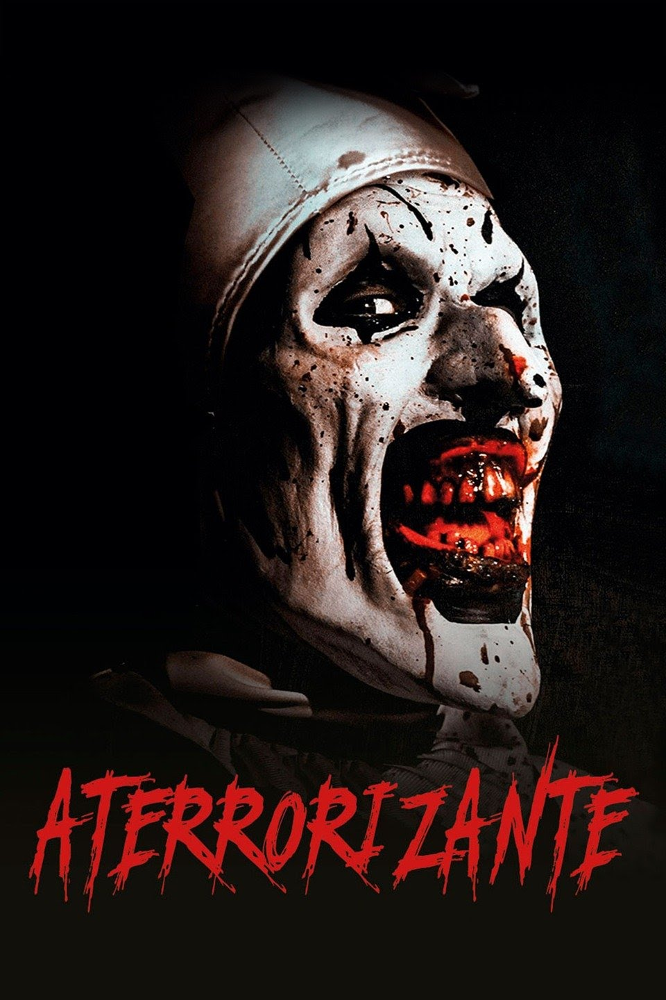

TERRIFIER
Informações Gerais:
Data de lançamento: 15 de março de 2018 (EUA).
Diretor: Damien Leone.
Continuação: Terrifier 2.
Gêneros: Terror, Slasher, Curta-metragem, Suspense.
Duração: 1h 25m.
Direção de arte: Molly Maguire.
Direção de arte: Molly Maguire.
Sinopse:
Enquanto cuida de duas crianças no halloween, uma babá encontra uma antiga fita VHS no saco de doces. O filme apresenta três contos de terror, todos ligados entre si por um palhaço assassino. Ao longo da noite, coisas estranhas começam a acontecer na casa e a presença do palhaço parece cada vez mais real.